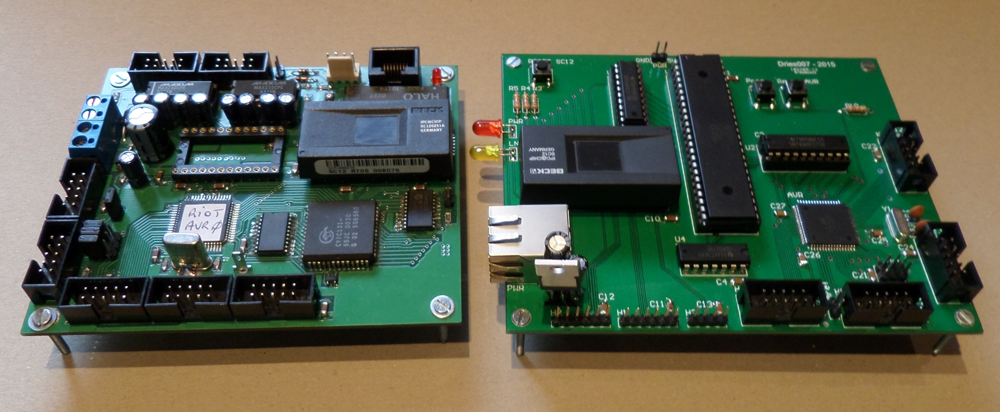
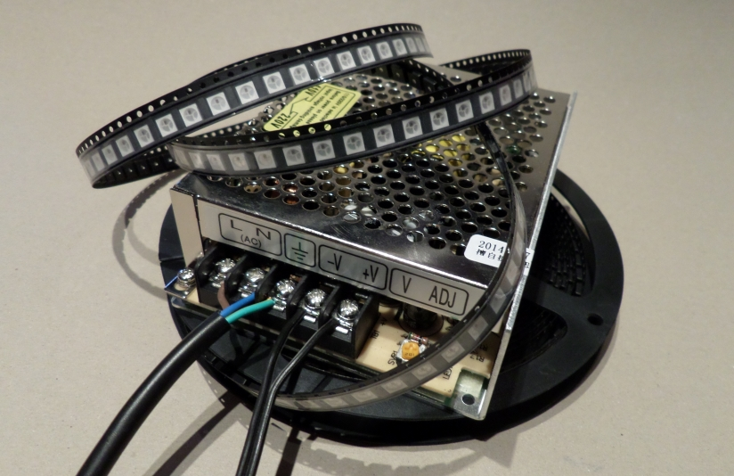
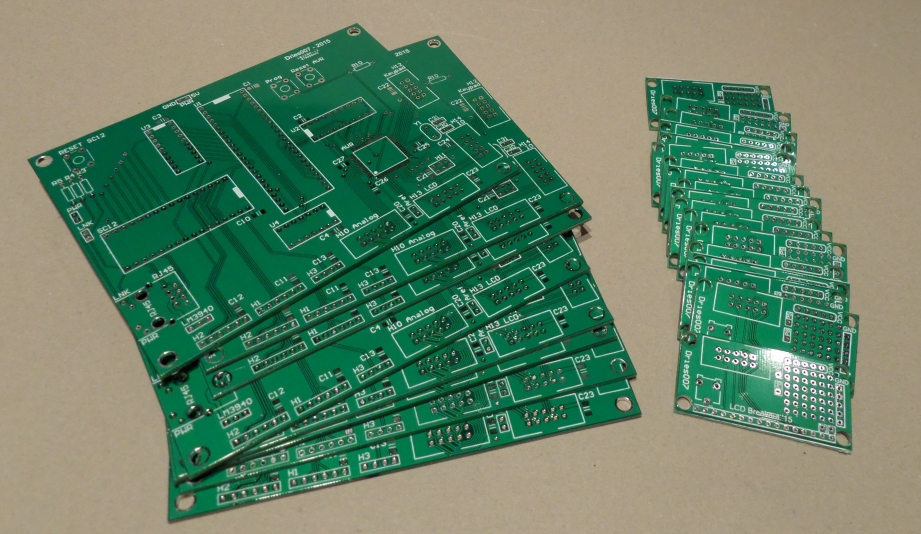

Dit project gebruikt 2 controllers, een AVR ATMega128A en een Beck SC12. De reden hiervoor is dat de SC12 ingebouwde ethernet-mogelijkheden heeft, maar niet snel genoeg is om de zeer timings kritieke LEDs aan te sturen. Ook het lage aantal beschikbare pinnen op de SC12 is een probleem. Om deze problemen op te lossen is er dus een AVR microcontroller toegevoegd. Die is wel in staat de LEDs aan te sturen, en heeft genoeg pinnen beschikbaar om nog een LCD aan te suren en keypad uit te lezen. De communicatie tussen de AVR en de SC12 gebeurt door middel van een gedeeld geheugen (een dual-port RAM chip).

De hardware van dit project is gebaseerd op het RIOT bord van M Roggemans en D Pauwels. Meer informatie over dit bord is hier te vinden. Op mijn versie van het bord zijn onnodige onderdelen weggelaten. Onder andere de UART naar RS232, de Real Time Clock en het voedingscircuit moesten er aan geloven.
Omdat een volledig mastermind bord 12 x 8 = 96 RGB LEDs nodig heeft, heb ik gekozen voor WS2812 LEDS. Deze LEDs hebben, ongeacht de hoeveelheid, slechts 1 signaalpin op een (snelle) controller nodig. Ze worden namelijk als een lange lijn aan elkaar gekoppeld.

Een ander probleem met 96 RGB LEDs is dat ze nogal veel stroom kunnen verbruiken, namelijk 60 mA per LED. 6A in totaal dus. Daarom heb ik een professionele voeding gekocht van 35W @ 5V.
Ik heb voor dit project zelf printplaten getekend (met Altium)

De grote printplaat is gebaseerd op het RIOT board. Er zitten een paar schoonheidsfoutjes in het ontwerp, maar niets dat niet met een beetje geduld en wat software kan worden opgelost.
De kleine printplaatjes zijn bedoeld om het aansluiten van een LCD module gemakkelijk te maken. Ze zijn ontworpen om ook gebruikt te worden in andere projecten. Zo is er plaats voorzien voor de extra componenten, nodig voor de achtergrondverlichting, omdat die vaak verschillen per model.
TODO: LEDS